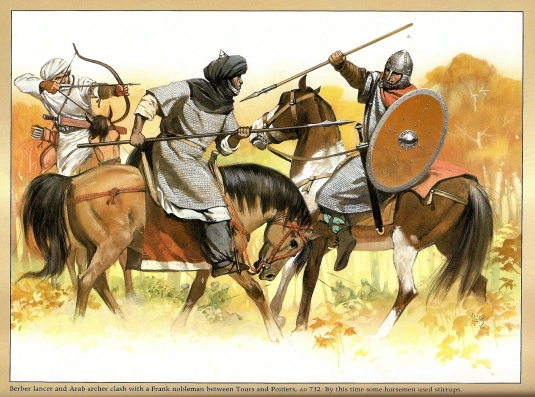

1. Historia
1.1 Conquista
Entre los años 711 y 715, los generales del Califato omeya conquistaron una parte de la península ibérica, aunque sin ningún tipo de dominio efectivo al norte del Sistema Central. La conquista del sur peninsular se sostuvo manu militari. La entrada de los musulmanes en la península se produjo con el desembarco en Gibraltar (Yebel Tárik), el 27 de abril de 711, de Táriq Ibn Ziyad lugarteniente del gobernador de Tánger (Musa ibn Nusair), liderando un ejército de 9000 hombres. Poco después, el 19 de julio, los visigodos fueron derrotados y su rey Rodrigo murió en la batalla de Guadalete. La presencia de los Omeyas al norte del Sistema Central era anecdótica, limitándose a guarniciones desde las que profundizar sus incursiones militares o razzias.
CONQUISTA
1.2 Emirato de Córdoba
En el año 756 Abd al-Rahmán I llegó a Córdoba y estableció una dinastía que gobernó al-Ándalus hasta 1031. En el 773 Abd al-Rahmán I creó el Emirato de Córdoba, independizándose política y administrativamente del Califato de Damasco, aunque mantuvo con el mismo una unidad cultural, espiritual y moral. Pese a todo, el verdadero organizador del emirato independiente fue Abd al-Rahmán II, que delegó los poderes en manos de los visires. La islamización fue muy rápida y el número de mozárabes (cristianos en territorio musulmán) se redujo considerablemente.
En el año 912, ascendió al trono Abd al-Rahmán III, cuando ya la decadencia política del emirato era un hecho. Intentando acabar con las sublevaciones y conflictos, se proclamó califa en 929, dando paso al Califato de Córdoba.
EMIRATO DE CÓRDOBA1.3 Califato de Córoba
En el año 929, Abd al-Rahmán III estableció el Califato de Córdoba, declarando la independencia religiosa de Bagdad, capital del califato abásida. Esta proclamación del califato contenía un propósito doble: en el interior, los Omeyas querían consolidar su posición. En el exterior, consolidar las rutas marítimas para el comercio en el Mediterráneo, garantizando las relaciones económicas con Bizancio y asegurando la subadministración del oro.
Tras la conquista de Melilla en 927, a mediados del siglo X, los omeyas cordobeses controlaban el triángulo formado por Argelia, Siyilmasa y el océano Atlántico. Como símbolo de poder y para legitimar su posición, el califa Abd al-Rahmán III erigió en torno al año 936 la ciudad palatina o áulica de Medina Azahara, como residencia real y sede del poder califal. El poder del califato se extendía asimismo hacia el norte y en 950 el Sacro Imperio Romano-Germánico intercambiaba embajadores con Córdoba. En el año 939 un ejército cristiano liderado por Ramiro II de León derrotó a las huestes árabes enviadas por Abderramán III en una de sus operaciones de castigo (razias) contra el norte. El resultado de la batalla disuadió a los Omeyas de su intención de instalar poblaciones árabes en las inmediaciones del Duero y sus áreas despobladas.
La de los Omeyas es la etapa política más importante de la presencia islámica en la península, aunque de corta duración pues en la práctica terminó en el 1010 con la Fitna de al-Ándalus o guerra civil que se desencadenó por el trono entre los partidarios del último califa legítimo Hisham II, y los sucesores de su primer ministro o hayib Almanzor, que desencadenó la fragmentación del estado omeya en multitud de reinos conocidos como Reinos de Taifas. En el trasfondo se hallaban también problemas como la agobiante presión fiscal necesaria para financiar el coste de los esfuerzos bélicos en sucesivas campañas contra el norte cada vez más gravosas.
CALIFATO DE CÓRDOBA1.4 Primeros reinos de taifas
Las taifas fueron hasta 39 pequeños reinos en que se dividió el califato como consecuencia de la fitna o guerra civil. El movimiento, iniciado por los Banu Hamud con la proclamación del reino de Málaga, se generalizará durante este periodo y llevará a la fragmentación del califato y a los primeros reinos de taifas. Este no será un periodo pacífico, ya que los distintos reinos de taifas se combatirán entre ellos. Al Califato omeya de Córdoba lo sucedió el Califato Hammudí de Málaga, si bien el derecho de los hammudíes a reclamar para sí el imamato o primacía de la comunidad no fue reconocido por un número de regulos de Taifas, era un derecho legítimo. Durante gran parte del periodo de las Taifas, la dinastía hammudí desde la Taifa de Málaga permaneció ejerciendo su poder efectivo y su autoridad religiosa reconocida en un gran territorio a ambas orillas del Mediterráneo.
Cada taifa se identificó al principio con una familia, clan o dinastía. Así surgen, además de la ya mencionada dinastía hammudí que dominaría los territorios de la antigua Cora de Rayya, Taifa de Algeciras y Cora de Ceuta, la taifa de los amiríes (descendientes de Almanzor) en Valencia; la de los tuyibíes en Zaragoza; la de los aftasíes en Badajoz; la de los birzalíes en Carmona; y la de los abadíes en Sevilla. Con el paso de los años, las taifas de Sevilla, Badajoz, Toledo y Zaragoza, constituían las potencias islámicas peninsulares.
PRIMEROS REINOS TAIFAS1.5 Imperio Almorávide
La disgregación del califato en múltiples taifas hizo evidente que solo un poder político centralizado y unificado podía resistir el avance de los reinos cristianos del norte.16 Así, la conquista de Toledo en 1085 por parte de Alfonso VI anunciaba la amenaza cristiana de acabar con los reinos musulmanes de la península. Ante tal situación, los reyes de las taifas pidieron ayuda al sultán almorávide del norte de África, Yusuf ibn Tasufin, el cual se estableció en Algeciras y no solamente derrotó al rey leonés en la batalla de Zalaca (1086), sino que conquistó progresivamente todas las taifas, a partir del 1090. Pero su brutal ocupación militar terminó en fracaso al resistir los leoneses el asedio a la emblemática capital visigoda de Toledo. La intervención almorávide en la península marcó el comienzo de una larga etapa de influencia magrebí en al-Ándalus. Al periodo almorávide (de finales del siglo XI hasta la década del 1140), le siguió luego el almohade (de mediados del siglo XII a la década del 1220) y por fin el benimerín (de finales del siglo XIII a principios del XV)
La crisis del Imperio almorávide viene marcada por la pérdida de Zaragoza en 1118, ocupada por Alfonso I de Aragón. Los primeros indicios del malestar andalusí contra los almorávides se produjeron en Córdoba en 1121, cuando la población se rebeló contra los almorávides; solo la intervención de los alfaquíes pudo evitar un baño de sangre. Otras rebeliones se produjeron en distintas ciudades y a partir de 1140 el poder almorávide empieza a decaer en el norte de África por la presión almohade. A la península llegan esas noticias. En 1144 un sufí, Ibn Quasi empieza un movimiento antialmorávide y empiezan a surgir los llamados segundos reinos de Taifas.
IMPERIO ALMORÁVIDE1.6 Segundos reinos de taifas
Los primeros indicios del malestar de la población andalusí contra los almorávides se produjeron en Córdoba en 1121, cuando la población se rebeló contra ellos. Solo la intervención de los alfaquíes pudo evitar un baño de sangre. Otras rebeliones se produjeron en distintas ciudades. A partir de 1140 el poder almorávide empieza a decaer en el norte de África por la presión almohade y a la península llegan esas noticias. Es entre 1140 y 1153 que aparecen los segundos reinos de taifas. La mayor parte de estos reinos serían barridos por el poderío militar almohade en poco tiempo (aunque la Taifa de Mallorca sobreviviría hasta 1203).
SEGUNDOS REINOS TAIFAS1.7 Imperio Almohade
Los almohades desembarcaron desde 114517 en la península ibérica, y trataron de unificar las taifas utilizando como elemento de propaganda su agresión a los reinos cristianos y la defensa de la pureza islámica. En poco más de treinta años los almohades lograron forjar un poderoso imperio que se extendía desde Santarém (Centro de Portugal) hasta Trípoli (Libia) y consiguieron parar el avance cristiano cuando derrotaron a las tropas castellanas en 1195 en la batalla de Alarcos.
A pesar de los esfuerzos de los gobernantes, la dinastía almohade tuvo problemas desde un principio para dominar todo el territorio de al-Ándalus, en especial Granada y Levante. Por otro lado, algunas de sus posturas más radicales fueron mal recibidas por la población musulmana de al-Ándalus, ajena a muchas tradiciones bereberes. La victoria cristiana en la batalla de Las Navas de Tolosa (1212) marca el comienzo del fin de la dinastía almohade, no solo por el resultado del encuentro en sí mismo sino por la subsiguiente muerte del califa al-Nasir y las luchas sucesorias que se produjeron y que hundieron el califato en el caos político dando lugar a los Terceros reinos de Taifas.
IMPERIO ALMOHADE1.8 Terceros reinos de taifas
El derrumbe del poder central almohade conduce a una nueva época de fragmentación que una vez más da lugar a la aparición de reinos de taifas, entre el 1224 y el 1265 (nuevamente un reino taifa insular, la taifa de Menorca sería la más longeva y sobreviviría hasta 1287).
TERCEROS REINOS TAIFAS1.9 Reino nazarí de Granada
A mediados del siglo XIII al-Ándalus quedó reducido al reino nazarí de Granada. En el año 1238, entra en Granada Muhammed I ibn Nasr conocido, asimismo, como Al-Ahmar, «el Rojo». Es el creador de la dinastía nazarí (que tuvo 20 sultanes granadinos) y fue el fundador del Reino de Granada que, si bien al principio, confraternizó con los reyes castellanos, tuvo que convertirse, pasado el tiempo, en tributario de los mismos a fin de mantener su independencia. En las últimas décadas de la dinastía nazarí de Granada estuvo dividida por una guerra civil interna que enfrentó Al-Zagal, Muley Hacen hermano de Al-Zagal, y su hijo Boabdil.
El último rey de la dinastía nazarí fue Boabdil (Abu 'Abd-Allāh). Su derrota en 1492 por los Reyes Católicos puso fin a la Reconquista, proceso que comenzó en el siglo VIII con Don Pelayo y la batalla de Covadonga.1819 El Reino de Granada fue anexionado a la Corona de Castilla.
REINO NAZARÍ DE GRANADAExplora más en el enlace a la Sociedad de Al-Ándalus.